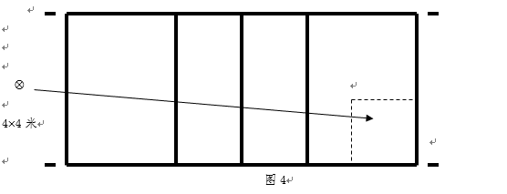
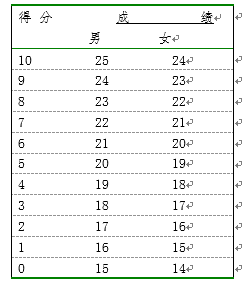

2026秋 · SPORT50005.01 · 刘挺、盛珍珍
来源：复旦教务系统教学大纲，本轮使用已授权账号下载。原始正文与考核信息；去除联系方式和网页脚本，内嵌图片按原字节去重保存。
通过本课程在理论与实践方面的教学，使学生具备基本的排球教学训练、理论研究和指导社会排球活动的能力，做到能示范、会讲解、能组织教学及组织基层比赛和承担裁判工作；培养学生团结合作、勇于拼搏的精神，同时也为学生以后的就业打下坚实的基础，培养出适合我国现代化社会主义下排球专业化的本科专业性应用型人才。
Offering theoretical knowledge and hands-on practices, this course aims to equip the students with the basic abilities of tutoring volleyball training, carrying out theoretical research and guiding social volleyball activities, enabling them to demonstrate, explain, and organize volleyball education or amateur competitions and to umpire; foster a spirit of solidarity and cooperation and the courage to strive, which construct a solid foundation for students’ future career prospects, so as to cultivate practice-oriented undergraduate professional talents suitable for our modern socialism under the specialization of volleyball.
（一）认知目标
全面系统地学习，了解和掌握排球运动基本理论、基本规律和排球运动的发展态势。
（二）技能(能力)目标
较全面地掌握排球运动基本技术、战术及技能，达到排球一级以上运动员水平；培养学生具备从事排球教学与业余训练能力，竞赛组织与裁判的工作力；掌握排球科学研究方法，具备独立撰写科研论文能力。
（三）情感目标
热爱排球运动，培养学生自主学习、团结协作、刻苦训练、勇于拼搏和为排球教学事业奋斗的事业心和敬业精神。
本课程授课方式以现场教学为主要形式，每学期包括6-8学时理论课教学，其余教学均在专业场地开展实践教学。教学时教师要注意以下事项：
（一）安全第一原则，重视安全教育，结合教学环境特点，科学安排教学，减少伤病发生。
（二）在教学过程中，教师要认真钻研教材和教法，提倡创新，根据排球运动的特点采用多种教学法及手段调动学生学习积极性。
（三）动作要领提倡用通俗易记的口诀。
（四）充分发挥学生的主观能动性。
（五）加强学生的团队意识，更高、更快、更强、更团结。
排球专项教学理论与实践五
|
周次 |
教学内容 |
|
第1周 |
1打防练习。 2熟练4、3、2号位扣球技术，复习4号位平拉开战术。 3身体训练。 4体能恢复性练习。 |
|
第2周 |
1打防练习。 2熟练4、3、2号位扣球技术。 3学习后排插上进攻战术。 4二传练习。 5体能恢复性练习 |
|
第3周 |
1打防练习。 2熟练前排扣球技术。 3复习后排进攻技术。 4身体训练。 5教学比赛。 |
|
第4周 |
1传垫球基本功训练 2打防串联基本功训练。 3前排扣球基本功训练。 4练习三人接发球阵形。 5体能提升训练。 6友谊赛。 |
|
第5周 |
1打防练习。 2熟练扣球技术。 3前排进攻战术练习。 4单人多球扣球训练。 5身体训练。 6教学比赛 |
|
第6周 |
1复习跳传球技术。 2打防练习。 3熟练扣球技术。 4 4、3号位连续扣球练习。 5体能提升训练。 6友谊赛。 |
|
第7周 |
1教学实践：比赛。 2理论课：比赛临场指导。 |
|
第8周 |
1打防练习。 2熟练扣球技术。 3后排进攻战术练习。 4前排3点多球扣球训练。 5连续“边一二”进攻练习。 6教学比赛 |
|
第9周 |
1打防练习。 2熟练扣球技术 3教学比赛。 4体能强化训练。 |
|
第10周 |
教学实践：比赛。 |
|
第11周 |
教学实践：比赛。 |
|
第12周 |
1传、垫球基本功训练。 2打防串联基本功训练。 3扣球基本功训练。 4拦网基本功练习。 5赛后体能恢复训练。 |
|
第13周 |
1传垫球基本功训练 2打防串联基本功训练。 3扣球基本功训练。 4发球基本功练习。 5赛后体能恢复训练。 |
|
第14周 |
1打防练习。 2熟练扣球技术 3教学比赛。 4身体训练。 5教学比赛。 |
|
第15周 |
1复习考试项目。 2理论课：比赛临场指导2。 |
|
第16周 |
专项考试 |
|
第17周 |
机 动 |
|
第18周 |
机 动 |
（五）排球专项理论与实践五考核内容、方法与标准
1.平时 30%
出勤、训练表现、为集体服务等，课后作业。
2.理论 30%
考试内容与范围：训练计划撰写。
考试形式：笔试。
3.比赛成绩 10%
教学实践：比赛。
（1）技术评价 10%
接发球 10分
方法：被技评队员位于5号位16平方米的区域内，接对方发球（图4），将球垫到2-3号位之间二传位置上。

技评要点：判断取位，垫击动作，一传效果。
串联技术（防、扣、调） 10分
方法：达标者位于4号位防对方4号位的高台扣球，防起球后扣由3号位二传传起的4号位一般球，扣球落地后迅速后撤将二传队员抛出的球调整至2号位。连续串联3次。
评分标准：防起能攻得1分，扣球成功得1分，调整二传到位得1分。如防守失误，三项均不得
5.体能 10分
仰卧屈膝上体收腹（20秒） 10分
评分标准：仰卧屈膝上体收腹（次）

中国排球协会译定，《排球竞赛规则2021-2024》，人民体育出版社，ISBN：9787500962540。
黄汉升主编，《球类运动—排球》，高等教育出版社，2005年7月，ISBN：9787040169591。
| 项目 | 比例 | 评定说明 |
|---|---|---|
| 出勤Attendance | 30.0% | 1、出勤率达到总课时三分之二以上方可评分； 2、出勤一次得2分，出勤二次得4分，依此类推，满分30分。 |
| 课堂表现Participation | 10.0% | 对学生学习态度与行为、交往与合作精神、情意表现、进步幅度等方面进行评定。 |
| 期末考试Final Examination：其他 | 60.0% | 专项技术测试：定量评分+定性评分（详见专项评分标准） |